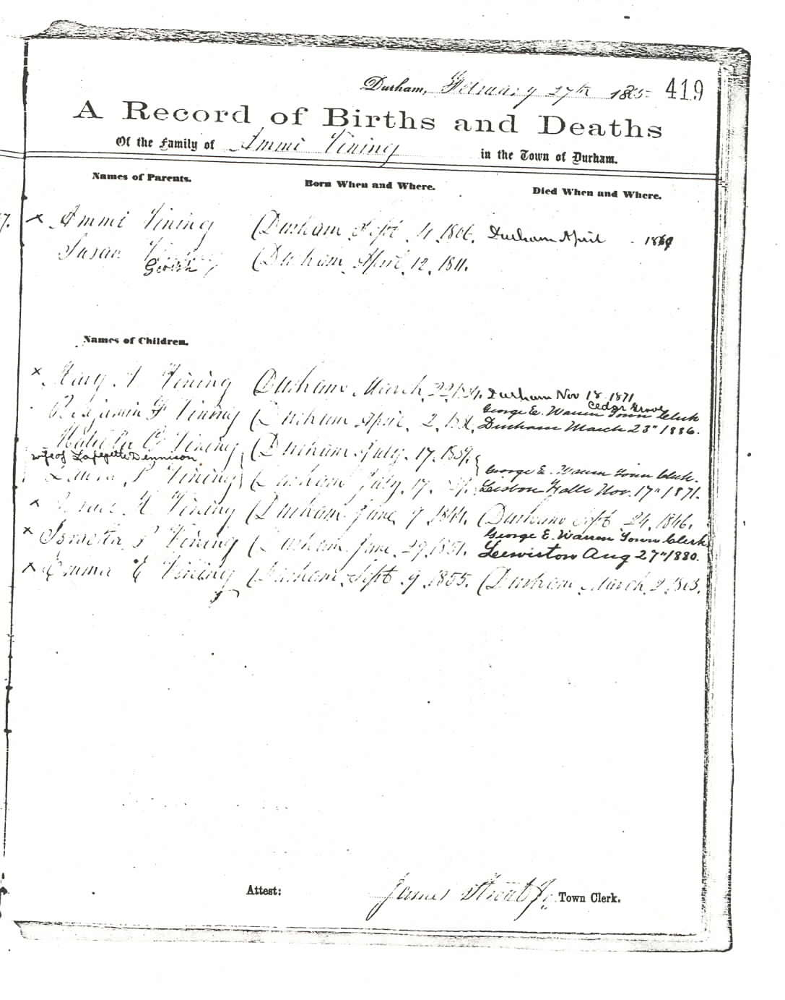
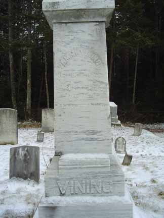
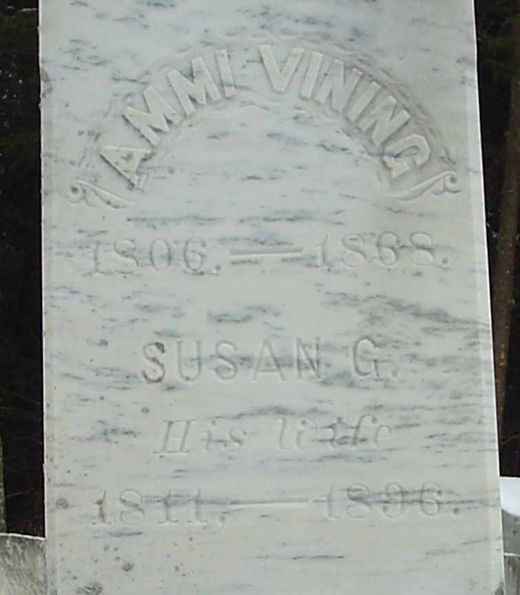
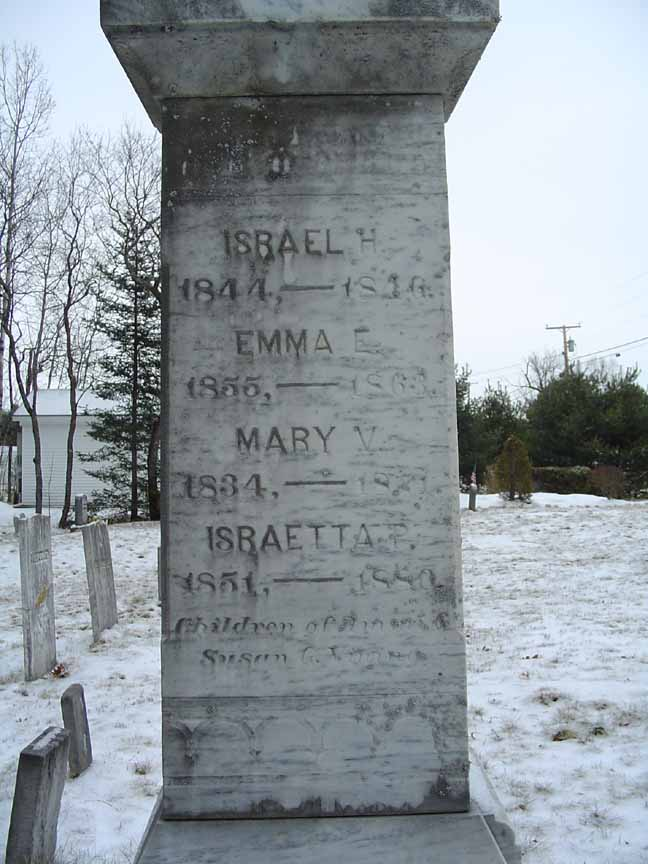
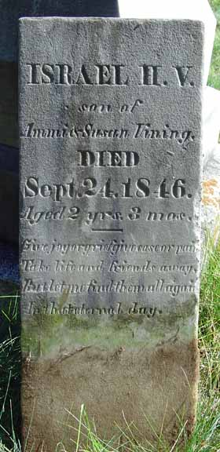
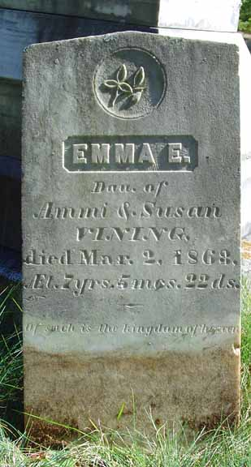

Birth Data
The town of Durham, Androscoggin County, Maine, has photocopied its vital record books, and those photocopies are available for public viewing. Unfortunately, much of the photocopied material is very difficult to impossible to read. Below is the page (greatly enlarged) recording the family of Ammi Vining and Susanna "Susan" Gerrish. The information on this page was entered by what appears to be three individuals. The earliest (and lightest) entries were made on 27 February 1865 by James Strout Jr., the town clerk, and recorded events that occurred from only a few to more than 50 years earlier.
Census Data
| 1840 | 1850 | 1860 | 1870 | 1880 | 1890 | |
| Ammi Vining | M 30–39 | 40 | 53 | dead | ||
| Susanna "Susan" (Gerrish) Vining | F 20–29 | 35 | 49 | 59 | 69 | ? |
| Mary V. Vining | F 5–9 | 16 | 26 | 36 | dead | |
| Benjamin Franklin Vining | M under 5 | 14 | 24 | not living in this household | married and living in separate household | |
| Matilda G. Vining | F under 5 | 11 | 20 | not living in this household | ? | ? |
| Laura P. Vining | F under 5 | 11 | 20 | not living in this household | ? | ? |
| Israel H. Vining | dead | |||||
| Israetta P. Vining | 8 | 18 | 28 | dead | ||
| Emma E. Vining | 4 | dead |


Death Data
Below are two images (a distant view and a close-up) of the gravestone of Ammi Vining and Susanna "Susan" (Gerrish) Vining. This stone is in the Vining Cemetery in Durham, Androscoggin County, Maine.



